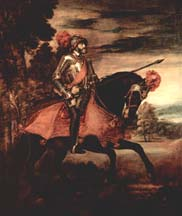
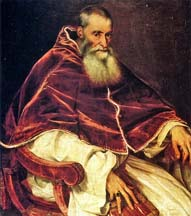
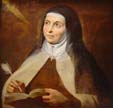

NOTAS - Capítulo 6
alumbrados
Miembros de un movimiento religioso que comenzó en España a finales del siglo XV, cuyas raíces se hallan en movimientos populares como la devotio moderna de los Países Bajos y que tiene ciertos paralelos con el protestantismo. Los alumbrados postulaban la posibilidad de una intensa relación íntima entre el alma individual y Dios, evitando así la necesidad de intermediarios eclesiásticos. (Nótese que entre sus adherentes hubo religiosos, sobre todo franciscanos y jesuitas, además de seglares.) Los alumbrados gozaron de éxito en particular entre conversos, tanto de origen judío como musulmán. La Iglesia suprimió este movimiento en el siglo XVI, aunque hay alguna evidencia de su persistencia hasta el XVII.
Berbería
{kind=link}
Nombre (de beréber) que se refería a las costas del norte de Africa menos Egipto, y en especial a los estados que en nombre formaban parte del Imperio Otomano (Argel, Túnez, Tripoli). En realidad los bajás (pashas, o "gobernadores") de los estados berberiscos —como Khair ad-Din ("Barbarroja")— fueron señores independientes que se aliaron con los otomanos debido a las ventajas militares y políticas que tal relación ofrecían. Este mapa de finales del siglo XVI fue producido en Amberes. (Haz clic en la imagen.)
calvinismo
Movimiento protestante nombrado por su teólogo más importante, Juan Calvino (Jean Calvin o Chauvin, 1509-1564), de origen francés, aunque se instaló en Suiza (Ginebra) para evitar la persecución de las autoridades francesas. El calvinismo tuvo mayor éxito que el luteranismo después de la muerte de Lutero, y se impuso en Suiza y Holanda; los hugonotes franceses, los prebíteros escoceses y los puritanos ingleses tuvieron todos su origen en el calvinismo. El calvinismo supuso una radicalización del protestantismo; se rechazó el sacramento del sacerdocio y se impuso un marcado ascetismo en las celebraciones religiosas, con la eliminación de música e imágenes en las iglesias. Para los calvinistas, la fe era la única vía de salvación y las buenas obras no constituyen ningún mérito, aunque por su misma naturaleza serían caritativos quienes se salvarían. Los calvinistas también creían en la predestinación; según Calvino, Dios ya había elegido a quienes se salvarían desde el comienzo del tiempo.
Carlos V (1548)
{kind=link}
Retrato de Carlos V de Ticiano, realizado en 1548. El emperador sufría de la gota en esta época; compárese este cuadro con el otro de Ticiano de las notas del Capítulo 5.
corsario
Los navegantes que consiguieron permiso oficial de un gobierno para ejercer la piratería contra los enemigos militares y rivales comerciales de aquel gobierno. Todas las potencias marítimas en los siglos XVI y XVII utilizaban a corsarios, que viene a ser un nombre más elegante para "pirata". Los otomanos y sus aliados berberiscos tenían numerosos corsarios en el Mediterráneo, así como los franceses (y, por supuesto los españoles y sus aliados); los corsarios ingleses y holandeses operaban principalmente en el Atlántico y el Caribe y, con el establecimiento de la ruta comercial entre las Islas Filipinas y Nueva España, también en el Pacífico.
derecho divino del rey (absolutismo)
Principio jurídico que presupone que el rey es el elegido de Dios. Este principio sirvió para respaldar la autoridad de los reyes en la Edad Media, pero es a partir de la alta Edad Moderna (es decir, a partir del siglo XVI), con la concentración del poder en manos del rey —sobre todo en reinos como España, Francia e Inglaterra— que este "derecho" constituye una justificación para el absolutismo. El absolutismo, por otra parte, se considera una ruptura con los esquemas sociales del feudalismo (aunque tiene sus orígenes en ese mismo sistema), ya que postula una relación directa entre monarca y súbditos, sin ningún tipo de intermediario (como por ejemplo otro miembro de la jerarquía aristocrática); además, todos los ciudadanos de un territorio son súbditos del rey, tanto los nobles como los plebeyos. (La trama de Fuente Ovejuna de Lope de Vega tiene que ver en parte con esta problemática; el Comendador y el Maestre de Calatrava se comportan como si fueran nobles independientes que controlan a sus propios vasallos sin que éstos pertenezcan a los reyes.) El absolutismo nunca fue absoluto: es decir, en toda Europa hubo vestigios de sistemas políticos anteriores (feudales y otros) que no se abandonaron hasta los siglos XVIII y XIX. (La compleja situación jurídica de Aragón y Navarra son un buen ejemplo de esto.) El principio del derecho divino del rey y el absolutismo se cuestionaron con la rebelión de las Provincias Unidas en los Países Bajos, que tras su independencia de la Corona española se declararon república sin rey.
Felipe II (1527-1598)
{kind=link}
{kind=link}
Dos retratos de Felipe II: el primero en su juventud, de Ticiano (1551) y el segundo de Juan Pantoja de la Cruz, cuando tenía más de sesenta años (h. 1590). (Haz clic en las imágenes para ampliarlas.)
Imperio Otomano
{kind=link}
(Haz clic en el mapa.)
Batalla de Lepanto
{kind=link}
Cuadro anónimo que representa la batalla de Lepanto en el que la Liga Santa (Venecia, los Estados Papales y España) vencieron a la armada turca en 1571. (Haz clic en la imagen para ampliarla.)
Leyenda Negra
{kind=link}
{kind=link}
{kind=link}
La llamada "Leyenda Negra" es un término que se aplicó por primera vez en el siglo XX a la propaganda anti-española que empezó a circular en el siglo XVI, gracias sobre todo a la imprenta, en la Europa hostil al poder hispano. Unos de los más famosos exponentes de esta propaganda fue el grabador flamenco protestante Teodoro de Bry (1528-1598), exiliado en el principado alemán de Estrasburgo. De Bry y sus hijos publicaron en 1598 una edición de la Brevísima relación de Las Casas, un texto que había circulado en francés, inglés y holandés desde mediados de siglo. Los grabados de esta edición (de los que pueden verse dos aquí, además de la portada, de la colección de libros raros de la Universidad de Pensilvania) ofrecen morbosas imágenes de las crueldades que denunció Las Casas; fueron reproducidos numerosas veces en los siglos XVII y XVIII y sirvieron para alegar la barbarie de los españoles, no sólo en las colonias sino en Europa también. Los protestantes holandeses y flamencos tenían motivo propio para promover esta propaganda, tras las severas represiones a finales del siglo XVI bajo el Duque de Alba en los conflictos en Flandes. Este tipo de propaganda anti-española dio materia también para propaganda anti-católica que típicamente hacía referencia a la Inquisición y sus abusos. Felipe II hizo poco para contrarrestar la publicación y diseminación de esta propaganda, considerándola de poca importancia. (Téngase en cuenta que ninguna otra potencia europea de la época se mostraba menos digna de críticas semejantes, aunque es cierto que ninguna otra tenía colonias tan amplias ni ejerció tanta influencia en la vida política de Europa como España en ese momento. De Bry también publicó una serie de grabados de la vida indígena de las Américas que ofrece una representación sensacionalista del canibalismo y otras prácticas "bárbaras" de los amerindios, así que es poco probable que compartiera los sentimientos morales de Las Casas al reeditar su Relación.)
Liga Esmalcalda
Una alianza de príncipes protestantes del Sacro Imperio Romano organizada para hacer frente al poder de Carlos V en los conflictos entre protestantes y católicos. Además de Esmalcalda (Schmalkalden) en Turingia, se unieron a la alianza Anhalt, Biberach an der Riss, Brunswick-Lüneburgo, Constanza, Estrasburgo, Insy im Allgäu, Lindau, Lübeck, Magdeburgo, Mansfeld, Memmingen, Reutlingen, y Ulm. Consiguieron el apoyo de Dinamarca y Francia, hasta que ésta firmó la paz con España en 1544. Los ejércitos de Carlos V vencieron a los de la Liga en Mühlberg en 1547. No obstante, los príncipes protestantes mantuvieron la resistencia hasta que Carlos V concediera la paz en Augsburgo en 1555.
La Ciudad de México (1628)
{kind=link}
Este mapa de 1628 nos puede dar una idea de cómo era la ciudad en la época de Bernardo de Balbuena. Nótese que el lago sigue dominando el paisaje, ya que en esta época todavía no se había drenado. Balbuena alaba los numerosos canales, calles y caminos, algo que se puede apreciar en esta imagen. (Haz clic en la imagen para ampliarla.)
moriscos y moros (y mudéjares, mozárabes, y muladíes): un recordatorio
En el siglo XVI, morisco y moro son los únicos términos relevantes ya de esta serie de palabras que empiezan por m y que reflejan la compleja historia religiosa y cultural de la Península Ibérica. Los moriscos (de moro + -isco) eran los descendientes de los musulmanes de al-Ándalus residentes en Iberia tras la caída de Granada en 1492, en teoría cristianos pero que a menudo mantenían costumbres y creencias musulmanas en privado. En el siglo XVI, la palabra moro (del latín, maurus, "nativo de Mauritania") es en realidad aplicable únicamente a los habitantes musulmanes del Norte de África, aunque también solía significar "musulmán" en general: la población musulmana de las Islas Filipinas, por ejemplo, que por supuesto no tiene ninguna relación étnica con los norafricanos, se llamaban (y siguen llamándose hoy en día) moros según esta práctica. La palabra en cambio no se aplicaba a los turcos. En todo caso, debido a la poca precisión del término (y su fuerte connotación despectiva hoy en día cuando se aplica a los marroquíes emigrantes en España), es recomendable evitarlo incluso cuando se quiere hablar de los norafricanos musulmanes del siglo XVI.
(Un repaso: mudéjar, del árabe mudajjan—"al que le ha sido permitido quedarse"—, se refiere a los musulmanes que en la Edad Media se quedaron en territorio crisitiano sin convertirse; mozárabe, del árabe must'arab —"casi árabe" o "arabizado"— se refiere a los cristianos que en la Edad Media se quedaron en territorio musulmán sin convertirse pero adoptando aspectos de la cultura andalusí, incluida la lengua árabe; muladí, del árabe muwallad —"mestizo"— se refiere a los conversos, cristianos o judíos, a la fe musulmana. Véanse los Capítulos 2 y 3 para más información.)
Mühlberg

{kind=link}
Retrato de Ticiano de Carlos V para celebrar su victoria sober los protestantes en la batalla de Mühlberg. (Haz clic en la imagen para ampliarla.)
Pablo III

{kind=link}
Retrato de Alessandro Farnese, el papa Pablo III, pintado por Ticiano en los años 40. (Haz clic en la imagen para ampliarla.)
Suleimán I "el Magnífico"
{kind=link}
La tughra o firma del sultán otomano Suleimán el Magnífico (r. 1520-1566). La tughra es símbolo de su autoridad y aparecía al principio de los edictos reales. (No la preparó el sultán sino calígrafos de la corte.) Bajo Suleimán el Imperio Otomano alcanzó el cénit de su poder. Conquistó más territorios en los Balcanes y sitió Viena en 1529; ganó varias victorias de importancia en el Mediterráneo aunque no pudo capturar Malta; de los territorios de los persas, conquistó Bagdad y otras ciudades importantes en lo que es hoy Irak; y bajo Suleimán los turcos dominaban también gran parte de la península arábiga y el norte de África, menos Marruecos. (Haz clic en la imagen para ampliarla; este ejemplar se encuentra actualmente en la colección del Museo Metropolitan de Nueva York.)
|  |
{kind=link}
Extasis de Santa Teresa (1652) de Gian Lorenzo Bernini
La canonización en 1622 de Teresa de Jesús (1515-1582) por el papa Gregorio XV, cuarenta años después de la muerte de la monja, y la campaña anterior a su canonización condujeron a la producción de valiosas obras de arte relacionadas con ella, entre las que destaca el cuadro de 1615 del pintor flamenco Pedro Pablo Rubens (1577-1640).
La representación más célebre de la santa, sin embargo, es la estatua de 1652 del escultor barroco italiano Gian Lorenzo Bernini (1598-1680) en la iglesia de Santa María de la Victoria en Roma. La escultura de Bernini representa a la santa en el momento de su experiencia mística de la transverberación que ella describía como una visión de un serafín que le clavaba una flecha dorada en las entrañas. (Véase "Lecturas".)
{kind=link}
virreinatos
{kind=link}
En el siglo XVI se establecieron dos virreinatos: el de Nueva España y el de Perú. (Filipinas caía bajo el dominio del virrey de Nueva España.) Esta situación no cambiaría hasta el siglo XVIII, cuando el virreinato de Perú se dividió. (Haz clic en el mapa.)